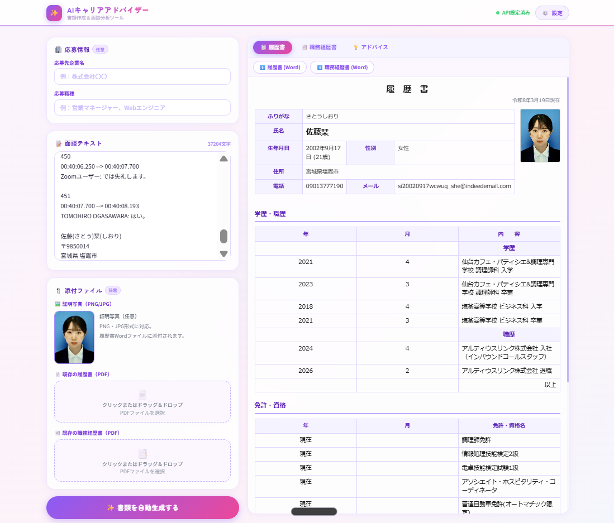
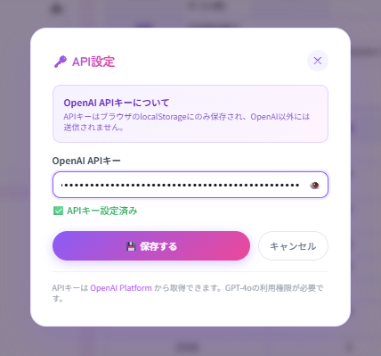
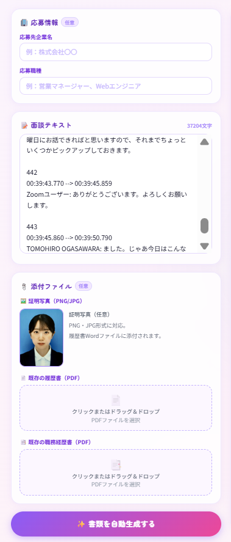
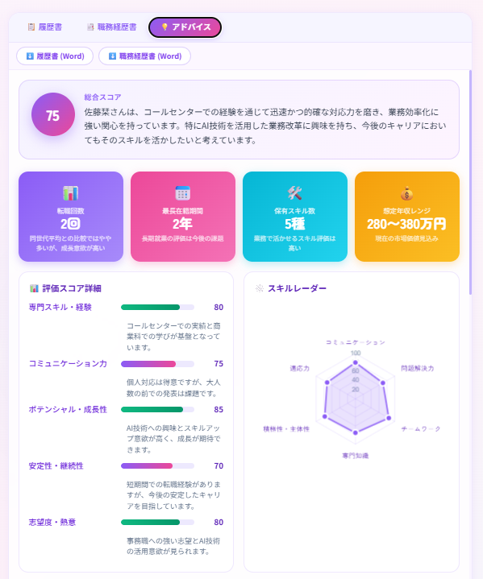
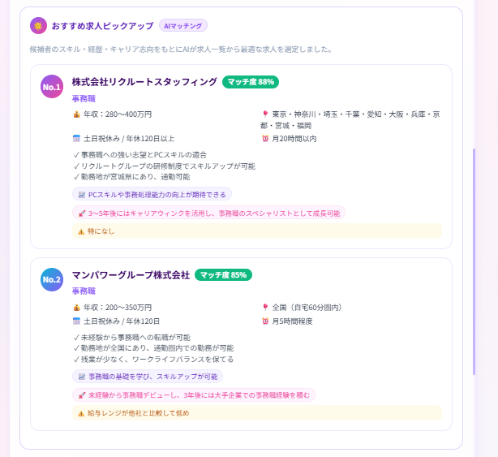
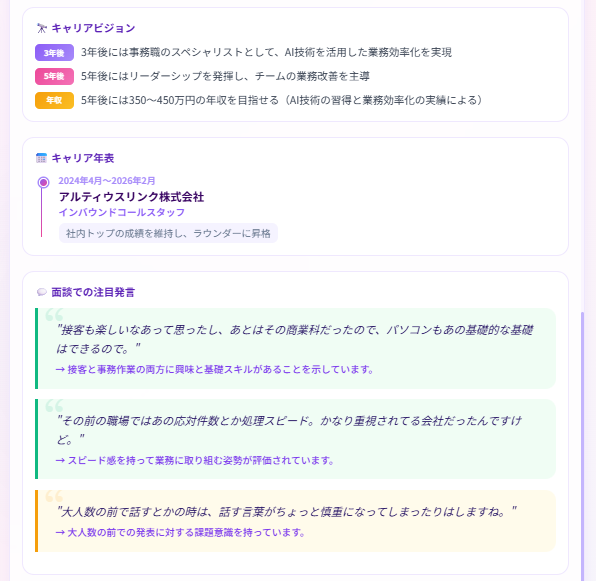
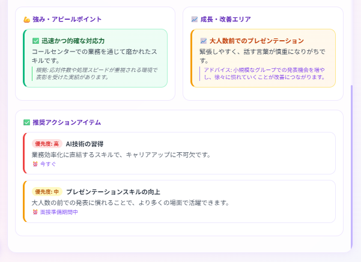
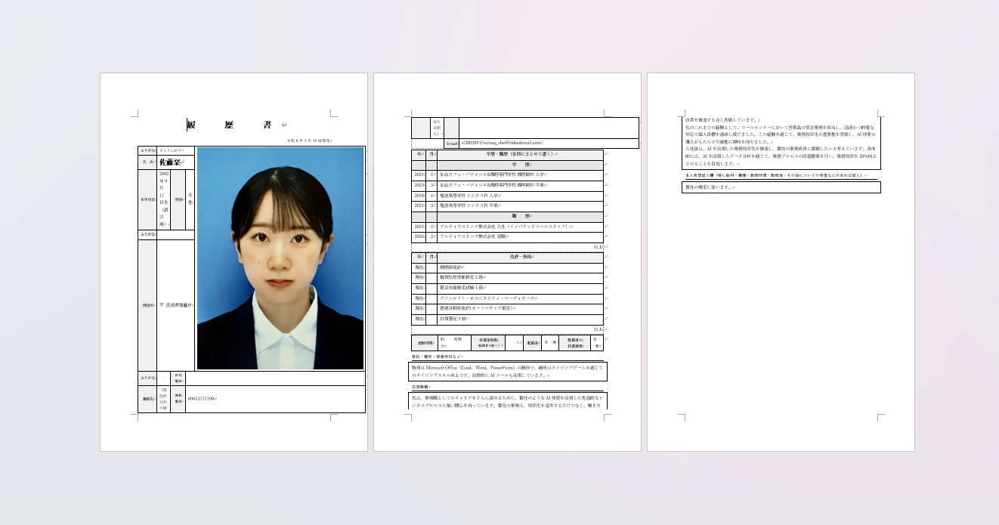

AIキャリアアドバイザー
使い方マニュアル
(株)杜の都工房 社内用

STEP
1
1
APIキーの設定

アプリを開いたら、最初に右上の 「⚙️ 設定」ボタンをクリックします。
OpenAI APIキー（sk- から始まる文字列）を入力し、「保存する」をクリックしてください。
APIキーはブラウザに保存されるため、同じブラウザを使う限り再入力は不要です。
※ APIキーをお持ちでない場合は管理者にお問い合わせください。
STEP
2
2
情報の入力

左側の入力エリアに以下の情報を入力します。
- 【応募情報（任意）】応募先企業名・応募職種を入力
- 【面談テキスト】面談の文字起こしデータをそのまま貼り付け
-
【添付ファイル（任意）】
- 証明写真（PNG/JPG）：クリックしてアップロード
- 既存の履歴書PDF：クリックまたはドラッグ＆ドロップ
- 既存の職務経歴書PDF：クリックまたはドラッグ＆ドロップ
入力が完了したら 「✨ 書類を自動生成する」 ボタンをクリックします。
生成には通常 30〜60秒 かかります。
生成には通常 30〜60秒 かかります。
STEP
3〜6
3〜6
AIアドバイスの確認

アドバイス画面①

アドバイス画面②

アドバイス画面③

アドバイス画面④
「💡 アドバイス」タブをクリックすると、AIによるキャリア分析が表示されます。
【表示される内容】
- 総合スコア・評価サマリー
- スコア詳細・スキルレーダーチャート
- 🌟 おすすめ求人ピックアップ（マッチ度・年収・クロージングキーワード付き）
- キャリアビジョン（3年後・5年後・年収予測）
- 面談での注目発言
- 強み・成長エリア
- 推奨アクションアイテム
求人とのマッチ度、クロージングで使えるキーワード、面談トークポイントを参考にしてください。
STEP
7
7
履歴書・職務経歴書の確認とダウンロード
「📋 履歴書」「📑 職務経歴書」タブでAIが生成した書類の内容を確認してください。
確認後、上部の 「⬇️ 履歴書 (Word)」「⬇️ 職務経歴書 (Word)」 ボタンをクリックしてダウンロードできます。
⚠️ ダウンロード後は必ず内容を確認してください
【履歴書】
- 証明写真のサイズ・位置がずれる場合があります。Wordで手動調整してください。
- その他の項目（氏名・住所・学歴・職歴・志望動機・自己PRなど）も内容を必ずチェックしてください。
【職務経歴書】
- 職務内容・実績・自己PRの内容を確認し、誤りがあれば修正してください。
- フォントやレイアウトのずれがある場合は手動で調整してください。
※ 生成された内容はAIによるものです。企業提出前に必ず内容をご確認ください。
STEP
8
8
Wordでの編集方法

ダウンロードしたWordファイルを開き、必要な箇所を編集します。
【よくある編集箇所】
- 証明写真のサイズ調整（写真を右クリック → 「図の書式設定」で高さ・幅を指定）
- 文字のフォント・サイズ調整
- 表の列幅・行の高さ調整
- 内容の追記・修正
編集が完了したら、PDF形式に変換して企業へ提出してください。
（ファイル → エクスポート → PDF/XPS形式で発行）
（ファイル → エクスポート → PDF/XPS形式で発行）
📄 テンプレートPDFダウンロード
書類作成の参考にご利用ください